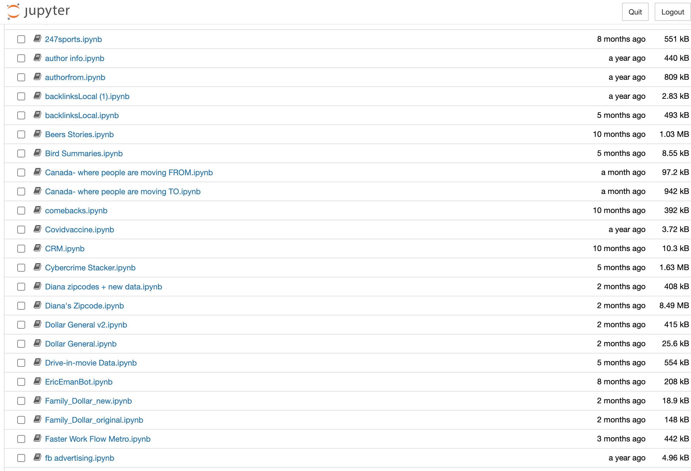

Home
My name is Dexter Norales and I hail from the South Bronx. I've always been interested in mathematics and science and I've been blessed to be around people that have fostered my interests - especially from a young age. A notable point in my life would be with my elementary school science teacher by the name of Ms. Hernandez. She was beyond passionate about science and worked very hard to get us resources so that we could learn. Donors Choose, an organization she built a rapport with, would often work with her to get us textbooks, volcano kits, led lights, circuits, and more. Though I wanted to be an arachnologist at the time, I was also interested in robotics. And so, through Donors Choose she got me a robotics kit that I still own today along with the items I made.
That experience allowed me to start problem-solving from a young age. I personally believe that skill has allowed me to succeed in my future escapades with science and math and by extension - coding. I started to code when I programmed robots in middle school. I coded again in my high school experience with programs like “CodeNow” and “NFTE Startup Summer Tech”. I took coding classes as well, online and in school. Up until my senior year of high school, I felt as though I had a solid foundation in coding and that I was just about competent with my peers. I took a coding class in my second semester of freshman year which changed my view of the world and the possible trajectories that would make my life.
The class itself wasn’t a life-changing experience though it was a solid class. The class was a python class. Python was a language that I was a bit stubborn to learn. I’ve spent so much time learning HTML, CSS, Javascript, Ruby, Java, and other languages. Why would I need to learn another language that I could possibly replace with something I already knew? Little did I know how powerful of a tool it was - which led to my success in my first internship at Stacker.
Within the summers of 2021 and 2022, I’ve worked for Stacker as an editorial research intern in the Local Team. This was a position I was nervous and even reluctant to take. The CEO of the company, a friend of mine, pushed me to take… Click here to read about my experience with Stacker.
In 2022, I worked for The Hustle Presents, Stacker Media, and for myself. In regard to working for myself, I wanted to launch a website that would satisfy my interest in knowing about the current value of investments that many celebrities made with crypto. Many of these payments were over $100,000… Click here to see more about paidintoken.com.